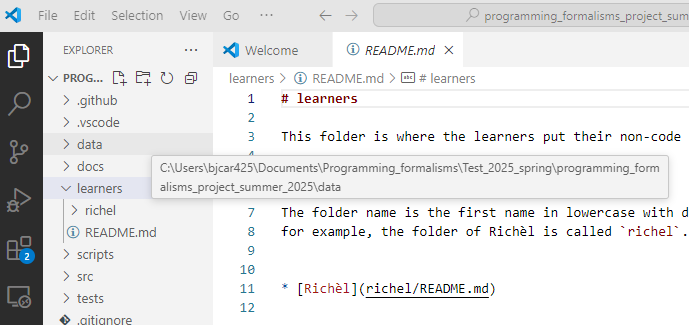
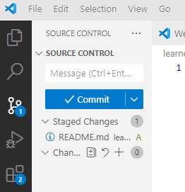
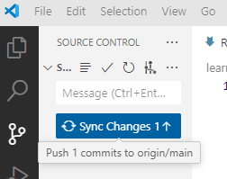
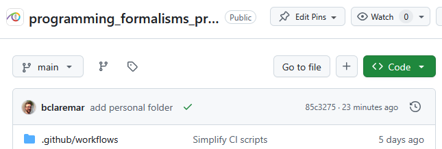

Git and get started with a project¶
Learning outcomes of 'Get started with Git/GitHub'
Learners
- are connected to the course repo
- can commit
- can write useful commit messages
- know how a local vs remote repo work
- can push/pull
- can manage conflicts
- are prepared for coming documentation
Instructor notes
- Teacher gives introduction with interaction 20 m
- Studens work in groups with at least one more used to Git in each
Prerequisites are:
- Git account
- GitHub account
- Git set up on computer
Not needed
- Use of git before
Did you miss to set up everything?
- Then try this in the background or ask for help?
- See the setup session this morning?
Already know git and GitHub?
If you have made 25 commits to GitHub, we assume you are already know git and GitHub.
If there is a minority that already knows git and GitHub, then those are welcome in the simultaneous session, where we'll go a faster and further.
What is Git, and what is a Git repository?¶
- Git is a version control system: can record/save snapshots and track the content of a folder as it changes over time.
- Every time we commit a snapshot, Git records a snapshot of the entire project, saves it, and assigns it a version.
- These snapshots are kept inside a sub-folder called
.git. - If we remove
.git, we remove the repository and history (but keep the working directory!). .gituses relative paths - you can move the whole thing somewhere else and it will still work- Git doesn't do anything unless you ask it to (it does not record anything automatically).
- Multiple interfaces to Git exist (command line, graphical interfaces, web interfaces).
Typical workflow for the course project¶
- students make development in local git and push to github?
- in principle centralized workflow
This is used when you are a collaborator

Centralized layout
- Red is the repository on GitHub.
-
Blue is where all contributors work on their own computers.
-
Centralized workflow is often used for remote collaborative work.
originrefers to where you cloned from (but you can relocate it).origin/mybranchis a read-only pointer to branchmybranchonorigin.- These read-only pointers only move when you
git fetch/git pullorgit push.
Other workflows?
- Other workflows in Merging and contributing with code review
This lesson¶
- Get overview of the course project
- Get local clone of the course project
- First contribution locally
- Upload changes
- Conflicts and resolutions
- A bit about project organization
- A bit about documentation
VS Code terminal¶
- We will work as much as possible (almost) in the VS Code graphical interface for Git
-
However, some things are better (or only) handled from a terminal/command line.
-
You find the Git Bash terminal From the menu (different on mac and windows)

Principles with Git¶
Concepts in Git
- repository: The project, contains all data and history (commits, branches, tags).
- Local: you computer or a server where you have full control
- Remote: server, e.g. GitHub
- Working locally
- add: Stage you files (collect what to be added to the git record — a kind of middle step)
- commit: Snapshot of the project, gets a unique identifier (e.g.
c7f0e8bfc718be04525847fc7ac237f470add76e).
- Working on Github
- Since you can only add changes in one file at a time, there is no middle step
git add - ''Commit`` button
- Since you can only add changes in one file at a time, there is no middle step
- cloning: Copying the whole repository to your laptop - the first time. It is not necessary to download each file one by one.
git clonecopies everything: all commits and all branches.
- We synchronize commits between local and remote with
- git fetch/pull and git push.
Clone¶
- Clone to your computer
- Buttons in VS code or a terminal, using
git clone
- Buttons in VS code or a terminal, using
(May be needed if time goes by:) Sync from GitHub¶
- As others are working on the same repo, there may be uploaded changes from fast collaborators.
- Do a
git pullto get these changes locally as well. - Do this before you start with new changes. Good practice!
- This reduces errors or double work!
Difference between git pull and git fetch?
We may cover this later. Not important now!
- Git pull copies changes from a remote repository directly into your working directory, while git fetch does not.
- The git fetch command only copies changes into your local Git repo.
- The git pull command does both.
- You Should Use git fetch When…
- You want to check if there are new updates on the remote repository but don't want to apply them immediately.
- You are working on new features and you want to avoid potential merge conflicts.
Make changes locally¶
Tracked files can be in three states.
- Modified: You changed the file.
- Staged: You changed the file and prepared it to be snapshotted.
-
Committed: You took a snapshot of the entire project, and the file was part of it.
-
On GitHub:
- Commit every file individually
Steps add changes to the git history
- make changes locally
- add and commit to the git version control
- your changes become part of the git history
- git push
- your changes are synced to GitHub
- git pull
- changes on GitHub are synced to you existinglocal git
- good procedure to do this step before you start changes
Update the file(-s)
- Save your changes as usual on your computer (e.g. in VS code)
Stage files (in git)
VS CODE
- Activate the source control environment from left menu!
- "+" button
Commit
- Every time we commit a snapshot, Git records a snapshot of the entire project, saves it, and assigns it a version (Hash tag).
- BUT only what we have added to the "staging" area!
VS CODE
- Activate the source control environment from left menu!
- "Commit" button and "Commit message" text
From bash terminal
git commit -m "<commit message>"
Alternative commits
- You can also omit the
-moption and a text editor will open. - The first line will be your commit message.
- You can add other lines to add some more detailed info about your changes.
Writing useful commit messages
- Each commit should stand on its own.
- Keep your commits small and independent.
- Write informative commit messages.
-
Each commit message should answer a question.
- Why was the commit created?
- What problem does it solve?
-
What Not to Do
- solve multiple problems in one commit
- combining commits that have nothing in common.
- Git as a backup system: commit their changes at the end of each day
Example
| Best | Bad | Worst |
|---|---|---|
| [login] Fix typo in DB call | Fixed typo in DB call | Fix typo |
| refactor login function for reuse | Changing login function by moving declarations to parameters | Code refactoring |
| add new api for user program check | adding a new api for user program check | New user api |
Upload to GitHub
VS CODE
- Activate the source control environemnt from left menu!
- Click the "Sync Changes" button (may be just a symbol)
-
You can add a push message (shown on GitHub then) or leave it empty, then the last commit message will be used.
From bash terminal
GitHub is now synced with your changes
Sync from GitHub (again)
- As others are working on the same repo, there may be uploaded changes from your collaborators
- Do a
git pullto get these changes locally as well. - Do this before you start with new changes.
- This reduces errors or double work!
Git/GitHub workflow
graph TB
P["Project idea"] -->|git init| Node2
P["Project idea"] --> planet.py -->|git add| Node4
Node4 --> |git commit| Node1
Node2 --> |git push| Node5
C[Uncommited changed planet.py] -->|commit button| R
Node5 --> |"git pull (from local git)"| Node2
R --> |"git pull (from local git)"| Node1
R <--> Node5
subgraph "Local Git"
Node2[project]
Node1[planet.py]
Node1 <--> Node2
end
subgraph "staging area"
Node4[planet.py]
end
subgraph "GitHub"
Node5[project]
R[planet.py]
end
Work directly on GitHub¶
Working on GitHub
- You can do basically the same work at GitHub as in your local git repo
- The graphical view makes it easier to work with in everyday editing work at least.
- Depends on your own preferences of course.
- Here your commit each file at a time with the "commit button".
- No staging that is.
- Be aware of that feature!
- GitHub Actions are workflows defined by you, like:
- for automatic testing after each commit (Used in the test lessons)
- for GitHub Pages, briefly covered in last session today or Extra reading: Documentation.
Exercises¶
Overview of the GitHub Project¶
Groups of mixed expertise!
- 3 to 4 people in each group
Exercise 1: "View the GitHub project at: https://github.com/programming-formalisms/programming_formalisms_project_summer_2025
- Click on a folder or file in the file explorer.
- This enables the file "Expand file tree" button to the left of the repo name.
- Click on that and look at the file tree!
- View README.md
- View Code of conduct
- View License
- Look at the history ("Commits" button just above the file explorer)
Exercise 2: Make changes locally (First steps without any conflicts!)¶
Exercise 2: Create a folder with your name (locally)
- Step into the
learners/directory (VS Code) - create a folder there, clicking the "new directory" icon in upper-left part
- git cannot use emptly directories
- Therefore create an empty README.md file INSIDE the created folder
Exercise 3: Stage files (in git)¶
Exercise 3: "Add/stage file
- First check the status!

- There is an U (for Untracked) beside the README.md file
- You want to add the files (focus the camera) to the list of files tracked by Git.
- Git does not track any files automatically and you need make a conscious decision to add a file.
- Hoover over the Source control icon in the Left menu
- It should say: "1 pending changes"
- Let's do what Git hints at and add the files:
- Click the Icon and then add (stage) the file with the "plus" sign
- There should now be an A (for Added) beside the README.md file
Exercise 4: Commit¶
Let us now commit the change to the repository:
Exercise 4: Commit

-
Write the commit message "add personal folder" and click the button
-
We can check the status by opening the bash terminal
- Choose the Git-bash
Exercise 5: Upload to GitHub¶
- In previous path we got:
$ git status
On branch master
Your branch is ahead of 'origin/master' by 1 commit.
(use "git push" to publish your local commits)
nothing to commit, working tree clean
Exercise 5: Let's push back to GitHub
- Let's "publish" you commits to the common GitHub repo
- In VS Code: Click the "Sync Changes" button

- You may also give a message,
- could be the commit message again or something else summarizing several commits or left empty

Exercise 6: Merge conflicts¶
- Create a new file with a unique name for your group,
for example
group_anna_and_sven.txt - All members of the team: get it on your local computer
- That is: you will get several files in total, but each just locally, so far.
How to do this?
- Do the same steps as the exercises above in the folder Learners/ (not folder with name)
- One member add the line below at the end of that file
and does a
git push:
- After this, without doing a git pull,
the other group member(s) add a last line at the end
(for example, the line shown below) and does a
git push:
- This person will get a merge conflict. How does the file look like?
Answer
The file will look similar to this:
- How would you resolve this merge conflict?
Answering
Combining these two lines of text is up to taste. The text could be replaced by, for example:
- Resolve the merge conflict and do a
git push
(Optional) Exercise 7¶
- Go back to last session and read more about a topic, like UML and/or Markdown and their syntax!
- Test out the Markdown and/or UML exercises directly in GitHub in your personal folder.
- See the rendered pages directly after saving the file(s)!
Revisit on Directory structure¶
Directory structure
-
Different projects should have separate folders
-
README file
- Data (version controlled)(.gitignore)
- Processed data intermediate
- (Manuscript)
- Results data, tables, figures (version controlled, git tags for manuscript version)
- Src version controlled code goes here
- License (here or in the 1st level)
- Requirements.txt
- Doc
- index
- .gitignore file
Summary¶
Parts to be covered
- ☐ Planning
- Pseudocode
- Unified Modelling Language (UML)
- ☐ Testing
- Different levels
- ☑ Source/version control
- Git intro
- ☐ Collaboration
- GitHub
- ☐ Reproducibility (for you and others)
- Deployment
- Dependencies
- (Workflows)
- ☐ Sharing
- open science
- citation
- licensing
- ☑ Documentation
- Explanation (in code)
Keypoints
- A repository can have one or multiple remotes (we will revisit these later).
- A remote (GitHub) in this case serves as a full backup of your work.
- Code development might be easier to develop in the local git repo since you can run and test locally in an easy way.
Reference Git¶
- Main git book
- Pro Git
- Tsitoara, Mariot, and Mariot Tsitoara. "Git best practices." Beginning Git and GitHub: A Comprehensive Guide to Version Control, Project Management, and Teamwork for the New Developer (2020): 79-86.